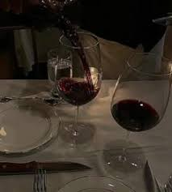
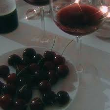

Red Wine

White Wine

Sweet Wine
The history of wine is a vibrant saga that intertwines with the very development of human civilization, stretching back thousands of years and spanning continents. It is a story not just of a beverage, but of agriculture, culture, religion, and commerce. The journey of wine begins with the wild grape, Vitis vinifera, which grew prolifically across Eurasia. While the exact moment of discovery is lost to time, archaeological evidence suggests that fermentation was likely an accidental yet fortunate occurrence. Wild yeasts present on the grape skins would naturally begin converting the fruit's sugars into alcohol when the grapes were stored in containers. Early humans, in their nomadic phases, likely followed these wild grape sources, eventually leading to more settled agricultural practices centered around the cultivation of this vital plant. The earliest conclusive evidence of wine production is found in the Zagros Mountains of modern-day Iran, specifically at the site of Hajji Firuz Tepe, dating back to around 5400–5000 BCE, where residue in a jar suggested a mix of grape juice, barley malt, and a resin from the terebinth tree. However, the most definitive and large-scale early winery discovered thus far is the Areni-1 cave complex in Armenia, dated to about 4100 BCE. This site featured fermentation vats, a press, storage jars, and drinking cups, indicating a sophisticated and intentional winemaking operation. This region of the South Caucasus is widely regarded as the cradle of viticulture. From here, the practice spread south into the Fertile Crescent. In ancient Egypt, wine became a vital part of elite life and religious ritual. Vineyard scenes adorn tomb walls, detailing the process of grape pressing and fermentation. The quality of wine was meticulously tracked, with amphorae (storage jars) inscribed with the year of harvest, the vineyard location, and the name of the winemaker—a precursor to modern labeling. While beer was the drink of the common people, wine was a status symbol, a drink for pharaohs and priests, essential for offerings to the gods and accompanying the dead into the afterlife. The Greeks became master vintners and traders, distributing wine throughout the Mediterranean. They made viticulture into a science, developing trellising systems and cataloging grape varieties. Wine was central to Greek social life, particularly the symposium—a drinking party where men would discuss philosophy, politics, and poetry. The god Dionysus, representing wine, ecstasy, and theater, highlights the beverage's profound cultural significance. The Romans inherited this deep appreciation for wine from the Greeks and the Etruscans, expanding its production to an industrial scale across their vast empire. They planted vineyards in Gaul (France), Hispania (Spain), and Britannia (Britain). Roman engineering introduced better presses and the concept of aging wine, moving beyond immediate consumption. They classified wines by quality, with the most famous, Falernian wine, aging for decades and commanding exorbitant prices. The amphora was eventually replaced by wooden barrels, a Celtic innovation that improved both storage and transport. With the decline of Rome, the Christian Church became the preserver of viticulture. Wine was essential for the sacrament of the Eucharist (Holy Communion), and monks in monasteries across Europe—most notably the Benedictines and Cistercians in France and Germany—maintained the knowledge of winemaking. They observed which grape varieties thrived in specific plots of land, laying the foundation for the concept of terroir that defines regions like Burgundy and Bordeaux today. Their meticulous record-keeping and dedication to quality ensured that the art of winemaking survived the Middle Ages. The age of exploration brought wine to the New World. Spanish missionaries planted vines in Mexico and later California and Chile to ensure a supply for Mass. European settlers carried their home-country traditions, leading to burgeoning wine industries in South Africa, Australia, and Argentina. The 19th century introduced challenges: the powdery mildew epidemic and the devastating phylloxera vastatrix louse, which nearly destroyed European vineyards. The solution, grafting European vines onto resistant American rootstock, saved the industry and showcased human ingenuity and global cooperation. The 20th century saw scientific advancements transform winemaking from an art to a precise science, with innovations in temperature control, hygiene, and yeast selection. The late 1970s and 1980s witnessed the rise of "New World" wines, challenging the dominance of traditional European powerhouses. The 1976 Judgment of Paris, a famous blind tasting where Californian wines beat top French Bordeaux and Burgundies, proved that world-class wine could come from anywhere. Today, wine is produced on every continent except Antarctica, a testament to a journey that began with an accidental fermentation in a simple clay jar thousands of years ago, a drink that continues to connect humanity to its agricultural roots and its shared cultural history.